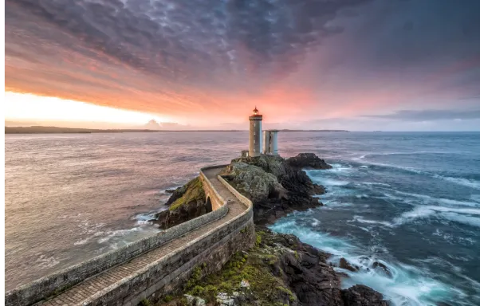

La Bretagne bien que souvent perçue comme une région assez pluvieuse, quelque chose de relativement peu entraînant. Non pas que cette partie de la France soit forcément mal perçue à cause de sa météo humide mais lorsque notre société (dans l’hexagone) se met à penser à la pluie, il leur arrive régulièrement de lier cette dernière à la région du cidre.
Au-delà de cela, les temps hivernaux dans la Bretagne (Sud majoritairement) peuvent faire penser à quelque chose d’assez sinistre. Dans la majorité des petites villes, celles-ci sont comme désertées (vides) et, au bord de la mer, lorsque le vent se fait particulièrement fort, la mer et ses vagues deviennent particulièrement violentes. Bien des falaises – au fil des années – se sont vues être balayées par des assauts aquatiques répétés, causant d’ailleurs différents cataclysmes comme des chutes de pierre mais aussi – dans de rares cas – des éboulements de logement ayant été construits un petit trop proche du bord des falaises.
Bien que la Bretagne ne soit que peu touchée par des inondations, (peu de fleuves ou de rivières traversent cette région outre la Loire à la frontière entre le Morbihan et la Loire-Atlantique au niveau de la ville de Saint Nazaire), plusieurs accidents marins ont souvent eu lieu dans la mer atlantique environnant les départements. On peut aussi parler de Belle-Île ou encore Houat et Hoedic (se prononce Édic). Par exemple, les niveaux de sécurité sur ces îles ne sont pas forcément toujours optimaux. En Juillet 2022, un individu d’une trentaine d’années est décédée d’une violente chute d’une falaise de Belle-Île alors qu’elle se baladait sur l’île. Il est cohérent de dénoncer l’inattention de cette personne qui ne devait sûrement pas faire attention où elle mettait les pieds mais, il n’est pas non plus impensable de remarquer que les indications de chemin ou bien le manque de barrière pour faire le tour de Belle-Île est peut-être insuffisant et responsable de cette chute mortelle d’une quarantaine de mètres.


Normandie


Pays de la Loire


Nouvelle-Aquitaine